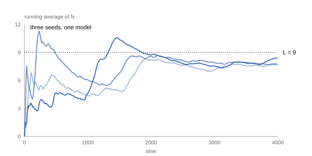

Measuring a simulation
Every page of this tutorial has compared a measured number against a formula, and each time the measurement quietly used the same three precautions: average over time, average over independent runs, and be suspicious of the start of a run. This page makes the three explicit, because on the problems where you need simulation — the ones with no formula — these habits are all that stands between you and a confident wrong answer.
The transient
A simulation starts empty. The theory's $L$ describes the steady state — the long-run behavior after the system has forgotten its start. Between the two lies the transient, and it can last a long time. Watch the running time-average of the number in system, $\bar N(t) = \frac{1}{t}\int_0^t N(s)\,ds$, for three seeds of an M/M/1 queue at $\rho = 0.9$, where theory says $L = 9$:
using Concourse, Statistics
net = QueueNetwork(param_names = (:lambda, :mu))
source!(net, :arrive; interarrival = Law(:Exponential, scale = inv(Param(:lambda))))
station!(net, :desk; service = Law(:Exponential, scale = inv(Param(:mu))))
sink!(net, :done)
route!(net, :arrive, Always(:desk))
route!(net, :desk, Always(:done))
m = compile(net)
θ = [0.9, 1.0]
function running_average(rec)
ts = Float64[]; avgs = Float64[]
acc = 0.0; tprev = 0.0; n = 0
for (k, t) in zip(rec.key, rec.time)
acc += n * (t - tprev)
n += (k[1] == :arrival) ? 1 : -1
tprev = t
push!(ts, t); push!(avgs, t > 0 ? acc / t : 0.0)
end
ts, avgs
end
runs = [running_average(simulate(m, θ, 4000.0; seed = s)) for s in (11, 12, 13)]
println("running average at t = 4000, three seeds: ",
join([string(round(a[end], digits = 2)) for (_, a) in runs], ", "),
" (theory: 9.0)")running average at t = 4000, three seeds: 7.74, 7.67, 8.41 (theory: 9.0)
Two lessons in one picture. The curves start far below 9 — the queue was born empty and takes a long time to climb — and after 4000 time units the three seeds still disagree with each other and with the theory. The climb is the transient, a bias. The disagreement is variance. They are separate problems with separate cures.
Cure one: outrun the start, or discard it
How badly can the empty start hurt? Drop to $\rho = 0.8$ (theory: $L = 4$), where the queue settles fast enough to measure the damage precisely. Average 32 replications at three horizons:
θ = [0.8, 1.0] # rho = 0.8, L = 4
for H in (50.0, 200.0, 2000.0)
naive = [time_average(number_in_system, m, simulate(m, θ, H; seed = 100 + r))
for r in 1:32]
println("horizon ", rpad(H, 8), "estimate ", round(mean(naive), digits = 2),
" ± ", round(std(naive) / sqrt(32), digits = 2))
end
println("theory: 4.0")horizon 50.0 estimate 2.61 ± 0.32
horizon 200.0 estimate 3.5 ± 0.35
horizon 2000.0 estimate 3.91 ± 0.14
theory: 4.0At horizon 50 the estimate is not just noisy — it is wrong, more than four standard errors below the truth, and averaging more replications of the same short run would only pin down the wrong number more precisely. Bias is the error replication cannot fix. It fades as the horizon grows past the transient, and there is a sharper tool: discard an initial warmup window and average only what remains. replay makes that a pure post-processing step — no re-simulation, just a different fold over the same record:
function windowed_average(g, m, rec, t0)
states = replay(m, rec)
times = vcat(rec.time, rec.horizon)
acc = 0.0; tprev = 0.0
for (i, t) in enumerate(times)
lo = max(tprev, t0)
t > lo && (acc += g(states[i]) * (t - lo))
tprev = t
end
acc / (rec.horizon - t0)
end
windowed = [windowed_average(number_in_system, m,
simulate(m, θ, 2000.0; seed = 100 + r), 500.0)
for r in 1:32]
println("discarding t < 500: ", round(mean(windowed), digits = 2), " ± ",
round(std(windowed) / sqrt(32), digits = 2), " (theory: 4.0)")discarding t < 500: 3.99 ± 0.17 (theory: 4.0)Cure two: replicate, and let the spread speak
A single run gives one number and no idea how wrong it is. Thirty-two runs give an average and a standard error (SE), and the SE is what turns "I got 3.91" into a checkable claim. That is the convention used on every page of this tutorial and throughout Concourse's test suite: report mean ± SE over independent replications, and treat an exact value as confirmed when it lies within four SEs.
The $\rho = 0.9$ chart shows why the convention matters. Those three seeds ran for 4000 time units each and ended at 7.74, 7.67, and 8.41 — every one of them below the true 9.0, and no one of them knowably so. A high-load queue drifts through long excursions, so a single trajectory — however long it feels — is one correlated sample, not a verdict. The spread across independent seeds is what tells you how much any of them can be trusted, and at $\rho = 0.9$ it stays wide enough that even 16 replications leave a standard error near half a job. That slow, expensive convergence near saturation is not a defect of the simulator; it is a fact about the system, the same one the BCMP case study met at its last sweep point.
Time averages and job averages
One last distinction, because getting it wrong silently corrupts measurements. There are two natural ways to average, and they answer different questions:
- Time average — "how many jobs are in the system, averaged over the clock?" (
time_average(number_in_system, ...); an operator's view of congestion). - Job average — "how long does a job spend, averaged over jobs?" (the per-job sojourns of the disciplines page; a customer's view of delay).
Little's law $L = \lambda W$ is the exact bridge between them. What is not a valid average is the tempting third option: averaging the state over the events in the record. Events cluster where the system is busy, so the event average overweights congestion:
rec = simulate(m, [1.0, 2.0], 2000.0; seed = 1) # rho = 0.5, L = 1
states = replay(m, rec)
event_avg = mean(number_in_system(st) for st in states)
println("time average: ", round(time_average(number_in_system, m, rec), digits = 3),
" (theory: 1.0)")
println("event average: ", round(event_avg, digits = 3),
" (biased — for this queue the exact event-average is 1.5)")time average: 1.004 (theory: 1.0)
event average: 1.51 (biased — for this queue the exact event-average is 1.5)Both numbers are computed from the same record; only one of them is the answer to "how full is this queue". Averages must be weighted by time unless the question is genuinely about events.
Where to go next
This page is the boundary of the tutorial. Everything here treated the record as a stream to fold statistics over; the Manual treats it as the central object it really is:
- The record and replay — determinism, and why every measurement above was reproducible.
- Branching worlds — comparing systems by splitting a trajectory instead of re-running it.
- Statistical analysis — batch means, regeneration, and variance reduction beyond naive replication.
The formulas checked out. From here on, you can trust the simulator on the systems that have no formulas.